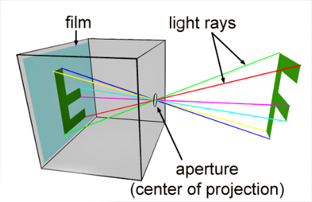

an interactive site for beginner photogaphers. Learn how a camera operates and how each setting plays a role in correct exposure.
an interactive site for beginner photogaphers. Learn how a camera operates and how each setting plays a role in correct exposure.
A camera lens takes all the light rays bouncing around and uses glass to redirect them to a single point, creating a sharp image. When all of those light rays meet back together on a digital camera sensor or a piece of film, they create a sharp image.
When light rays are forced through a small opening, they cross. When we see, the image is recorded on our retinas upside down as well — it’s up to our brain to flip it.
Light enters into the “dark chamber” through a small opening. We call the size of this opening the aperture. Apertures are measured in f-stops, with smaller numbers meaning the opening is wider. Similar to an iris, when a room is dark an iris expands and when the room is bright the iris constricts.
The longer the film or sensor is exposed, the more light will be in the final image. If there’s not enough time, the image will be underexposed, if there’s too much time, the image will be overexposed.
is the measurement of how sensitive the film or sensor is. Lower numbers are less sensitive, higher numbers are more sensitive. The lower the number, the more light you need to achieve a good exposure and vise versa.
Manual (M) — user controls aperture and shutter speed
Aperture Priority (A or Av) — shutter speed set automatically
Shutter Priority (S or Tv) — aperture set automatically
Automatic (P) — camera controls aperture and shutter speed
Your camera will have an exposure meter that tells you if your image will come out underexposed, exposed well, or over exposed. Use this meter to determine if your settings need to be changed.
Some digital cameras will show a histogram — a small graph that shows you where the pixels in the frame fall on a scale of dark to light.
Sometimes you may want to override your camera’s opinion to get a better balance of light and dark in the image. For example, maybe the sky in the background is too bright and the flower you're adjusting for is correctly exposed on the meter. You would adjust the settings to under-expose the flower and worry about brightening the flower in post processing.